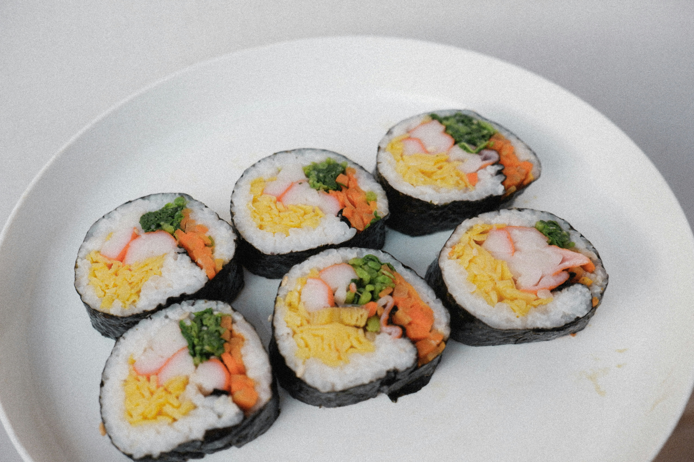

Photo by Devi Puspita Amartha Yahya on Unsplash
Kimbap is Korea's version of a sandwich - they're filling, portable and can be filled with anything you like, from spicy pork to soy bulgogi beef, tuna mayonnaise or hot dogs. They're often likened to sushi maki rolls, but the key difference with kimbap is that the filling is usually cooked - in fact all are individually cooked and seasoned to retain the best colour, flavour and texture - and the rice is warm or at room temperature, seasoned with sesame oil rather than vinegar. They are best eaten on the day as the rice hardens in the fridge and the seaweed sheets become soggy when reheated in a microwave, but if you do have any leftovers then the best way to heat them is to lightly whisk some eggs to dip the kimbap circles in, then lightly fry on both sides to gently warm the rice inside..
First, prepare the spinach. Put the spinach in a heatproof bowl and pour over boiling water from the kettle, pushing the leaves under the water using a spoon to make sure they all wilt. Drain, then rinse under cold running water and squeeze out any excess liquid. Return the spinach to the bowl and add the sesame oil, a pinch of salt and the sesame seeds. Mix and set aside.
Heat half the vegetable oil in a frying pan over a medium heat and fry the carrots for 2 mins until slightly softened. Remove to a plate and set aside.
Wipe the pan clean and heat the remaining oil over a high heat. Crack the eggs into a bowl and lightly whisk, then pour into the pan and swirl the pan to coat the base. Cook briefly until just set, then transfer the omelette to a chopping board and slice into strips, about ½cm thick. Put all the filling ingredients - the danmuji, seafood sticks, hot dogs, carrots, sliced omelette and spinach - on the same tray. Mix all the ingredients for the rice with ½ tsp salt in a large bowl.
Lay a seaweed sheet shiny-side down on a board and spread a quarter of the rice over three-quarters of the sheet in an even layer, leaving the top quarter of the sheet bare. Cut another seaweed sheet in half and lay this across the middle of the rice. (This will form the base layer for all the fillings.) Arrange a few pinches of each of the fillings across the length of that seaweed sheet. Lift the bottom of the larger seaweed sheet up and over the fillings, then tightly roll up, tucking everything in with your fingers as you go. At the end of the sheet, add a few grains of rice across the top to act as a glue to seal. Lightly brush with sesame oil and sprinkle with sesame seeds, then repeat to make the remaining rolls.
Slice into 1cm-thick circles using a sharp knife - if the knife starts to stick, wipe it with a piece of kitchen paper and sesame oil to create neat slices. You can also trim the edges if they're a little rough.